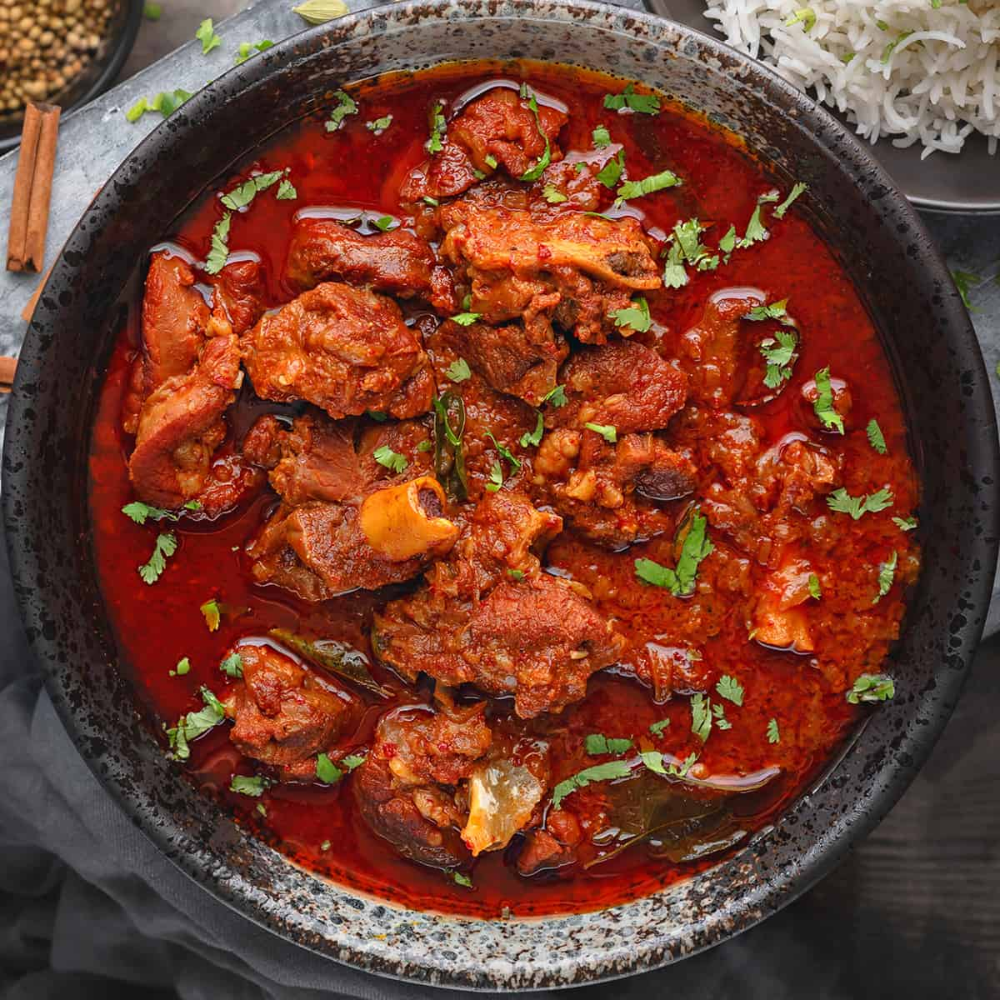

Lamb Vindaloo

Description
This Lamb Vindaloo is delicious fiery red curry dish of tender mutton chunks cooked in vindaloo sauce made with
lots of red chillies, vinegar, garlic and spices. It's an authentic Portuguese influenced Goan dish with
beautiful tang and mild sweet hint - all in one! Serve this delicious lamb vindaloo curry with steamed rice or
dinner rolls.
Ingredients
For Vindaloo Curry Paste
- 15 Kashmiri Red Chilies
- 10 Garlic Cloves
- 1 inch Ginger
- 1 tablespoon Coriander Seeds
- 1½ teaspoon Cumin seeds
- 6-8 Cloves
- 3 Green cardamom
- 10 Black Peppercorns
- 1 inch Cinnamon stick
- ½ teaspoon Turmeric Powder
- 2 teaspoon Tamarind Pulp
- 3-4 tablespoons Cider Vinegar
- Water to grind the paste
Meat Marination
- 2.2 lbs Lamb Shoulder or Goat Shoulder (cut in medium sized pieces)
- Salt to taste
- 2 teaspoons Sugar
For Curry
- 5 tablespoons Vegetable Oil
- 1 ½ cup Onion (finely chopped)
- Water as required
- 1 Sprig of curry leaves
- Chopped Cilantro for garnish
Steps
Making Vindaloo Paste
- Gather all the dry ingredients we need to make the paste.
- Add them into a blender and blend to a smooth paste.
Meat Marination
- Add the blended paste to mutton along with the salt, sugar. Combine well.
- Cover and let it marinate for overnight in the fridge. However, if there is a time crunch, then marinate atleast for 2 hours.
Slow Cooker Recipe
- Once the marination process is over. Heat oil in frying pan. Add chopped onions and sauté until soft.
- Add the lamb along with sautéed onions into the slow cooker pot and give it good mix. Add ¾ to 1 cup of water and curry leaves, stir.
- Cover the lid and cook it on low for 6-7 hours or until tender.
- Dish out, garnish with chopped cilantro and serve.